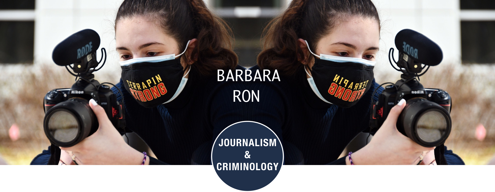

I'm Barbara, a senior at the University of Maryland-College Park and I'm pursuing a double major in Journalism and Criminology with a French minor. When I finish school I wish to work for a local TV station covering the local news that are at the core of our communities, and start to build my way up to be a national news correspondent. I would like to combine my criminology major with my future broadcast job by focusing on stories of people who have been impacted by crime, specifically victims of sex crimes and child abuse. My main passions include reading, figure skating, painting and fostering puppies in my spare time.
Video Creator and Producer Intern
College of Agriculture & Natural Resources
Jul. 2021- Present
Filmed, produced and edited videos for the AGNR school aimed at educating Maryland legislators, farmers and lawyers on individuals’ right to farm in the state.
Reporter and Anchor
WMUC-FM UMD
Spring 2022
Pitched stories to producers, varying in range from local stories to world-wide stories. Wrote stories in correct broadcast form that fulfill the time requirement and developed skills to write serious news stories as well as entertainment stories.
Cameraperson and Teleprompter
CNS-TV UMD
Spring 2020, Fall 2021
Worked as Audio Director for the show, therefore had to adjust all the different audio channels that were going to be used for the show, including on the field live shots, live on studio and packages. Another responsibility was working as a cameraperson and smoothly transitioned camera angles and frames when asked, and as planned on the rundown. Worked closely with producers and reporters when reporting on location.
Reporter
Stories Beneath the Shell
Spring 2021
Covered College Park and Riverdale Park and produced multiple stories this semester under tight deadlines. Highlighted underrepresented students and their stories. Went through training in this publication and under my Copy Editing course to copy edit in the AP Style.
Accounting Intern
Willco Companies
Aug. 2017- Dec. 2020
Collaborated with the construction team on 10 draw request projects resulting in a lower fixed cost and also did bank reconciliations.
- CNS-TV Audio Director, Floor Director, Camera Operator
- WMUC-FM
- Nikon D7500 Photographer and Videographer
- MS Office, Excel
- Software skills– MRI Software, Nexus, Adobe Acrobat Pro DC, Adobe XD, Adobe Premiere Pro, Adobe Bridge
- Spoken Languages – English (Native), Spanish (Native), French (Limited Working Proficiency)
 Truth About Pageantry: It's Empowering
Truth About Pageantry: It's Empowering UMD Freshmen During COVID
UMD Freshmen During COVID UMD Athletes During the Pandemic
UMD Athletes During the Pandemic